Cutting with Avidemux
Avidemux is a very simple video editor and converter. Unlike handbrake or ffmpeg, it has only limited support for multiple channels of audio/video/subtitles. Also, its codec support is more limited than ffmpeg's (but it has more than handbrake). Additionally, it was originally written to work with files in the Microsoft Windows AVI format, because of this other formats/codecs do not work properly in special circumstances.
Even though this is a simple tool, with some annoying errors, it is very useful for times when you have a clip of video and want to either remove a section from it, or take only a section of it and save it as a seperate file. Starting with our clip from sintel, we're going to try out both of these simple operations.
Lets start by opening the clip in the Avidemux program:
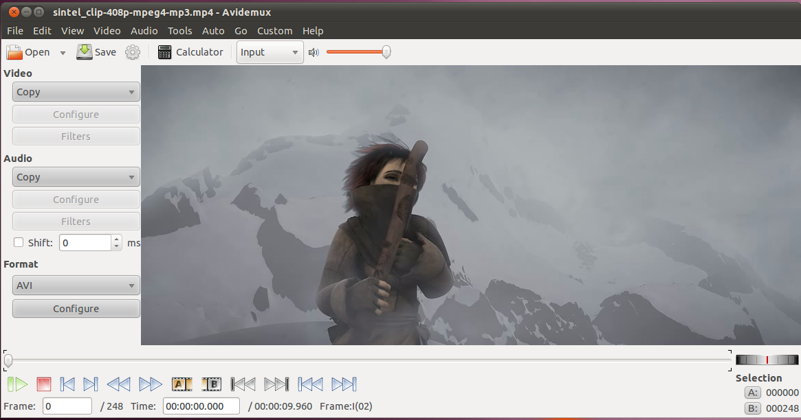
Cutting a Clip
Next we'll set the encoding paramaters from the drop-down menus on the left. We'll just MPEG-4 ASV (avcodec), MP3 (lame), and MP4. Whenever we click the save button, it will save our current selection (after asking us for a file name) by encoding the selection to this format. This can be a time-consuming process for large files, so it is possible to just set it to "copy", in which case it won't re-encode the video, however this can sometimes lead to errors.
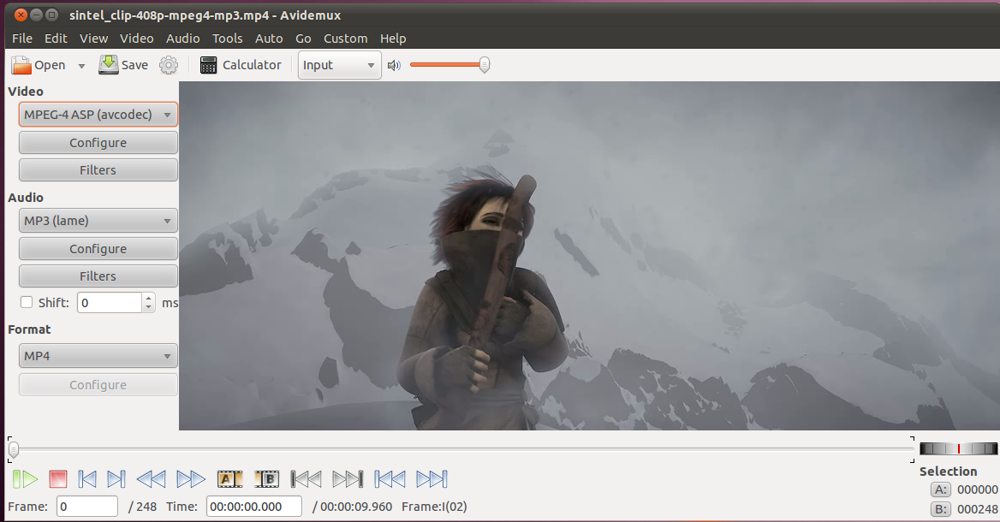
For our first example, we want to make the movie a bit shorter, by cutting out the black area around the introduction title. We'll use the "Next Keyframe" button to advance the video until we can see the title:
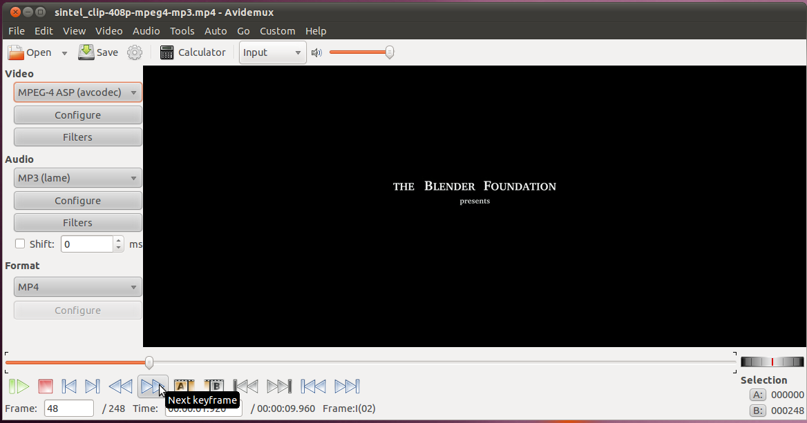
But we want to start cutting *before* we see the title, so we'll go backwards one keyframe:
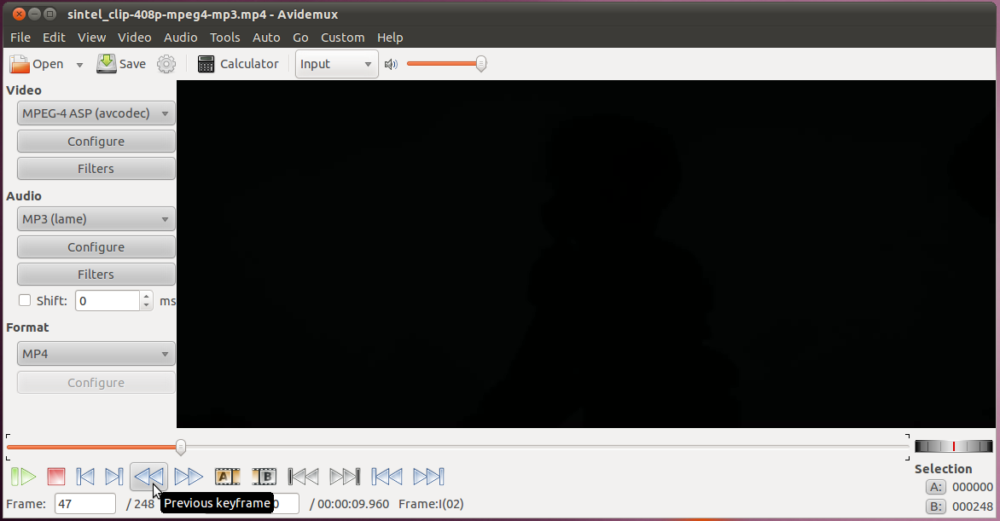
This will leave us on an entirely black screen. If we go back any further we will start to see the outline of the previous scene.
Now we will select this as the starting point of our selection:
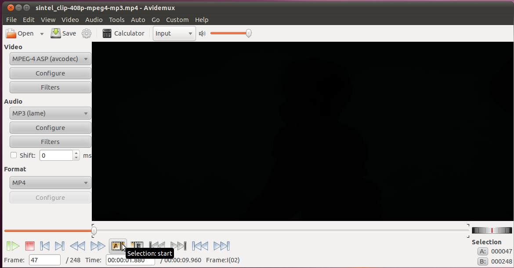
Once we have the starting point, we can use the "next keyframe" button to advance to where we're not seeing black anymore, and again back-up so we have only the black screen.
Now we want to mark the end of our selection:
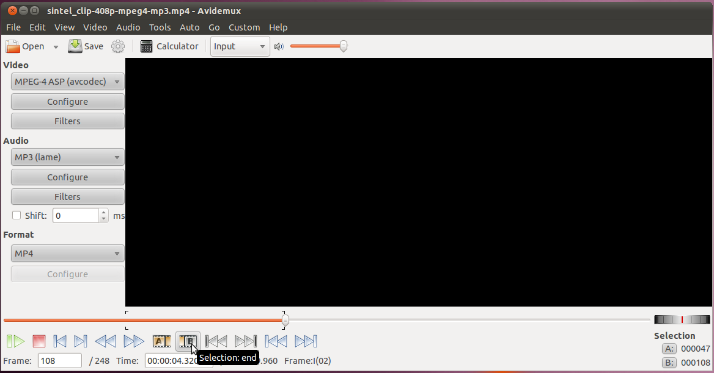
Finally, we're ready to cut the unwanted part out of the video:
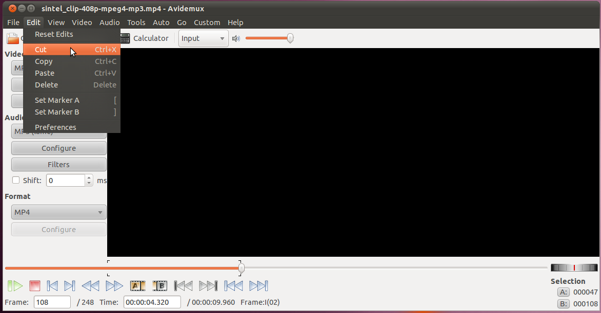
Now we want to save our video, without the black section. We can't simply click the save button now, because that only will save our selection, and since we just removed the selection from the video, there is currently no selection to save! We want to make a selection of the entire video. It easy, just go to the start of the clip:
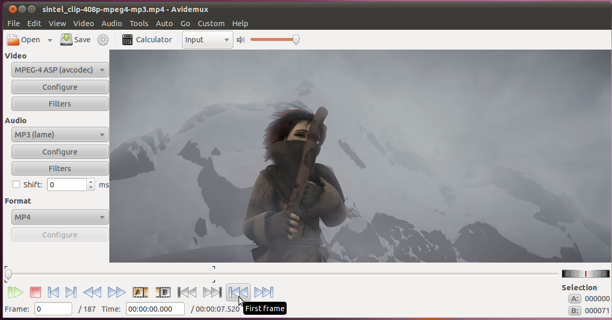
Once there, hit the button to mark the start of the selection.
Now we want to go to the end of the clip:
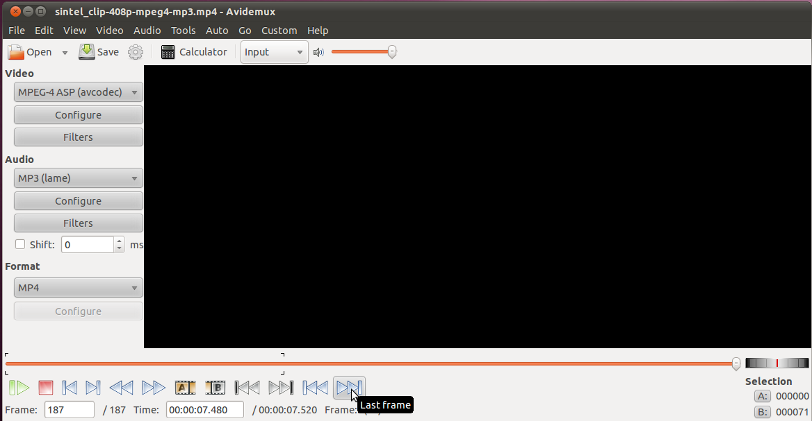
And we'll hit the button for the end of the selection. This will give us a selection of the whole clip.
Now we can hit the save button, and specify the file that where we want to put the output.
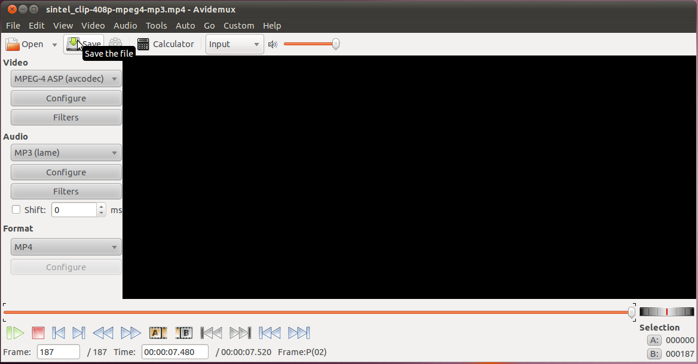
That's all!
Saving a Single Segment
For our next exercise, we'll go and pick out just the video containing the old man and save that segment to a file.
Just like last time, we can use the "Next Keyframe" and "Previous Keyframe" buttons to find where it starts. Then mark that as the start of our selection. Then we can advanced to just past where he finishes. In this case the keyframe immediately after where he is present in the video doesn't contain him, but the girl. Instead of going back a keyframe, and then having to move forward in the video, we can just go to the keyframe with the girl, then go back just one frame:
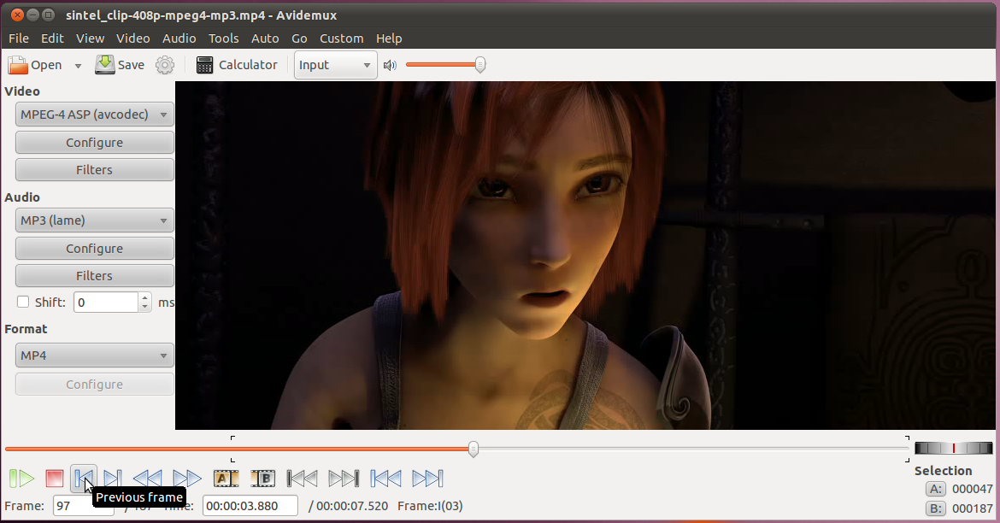
At this point we have the final frame on the screen and we can go ahead and hit the button to make this the end of our selection.
Now that we have a selection of just the video that we want, we can hit the save button and select the filename we want to save the section as.
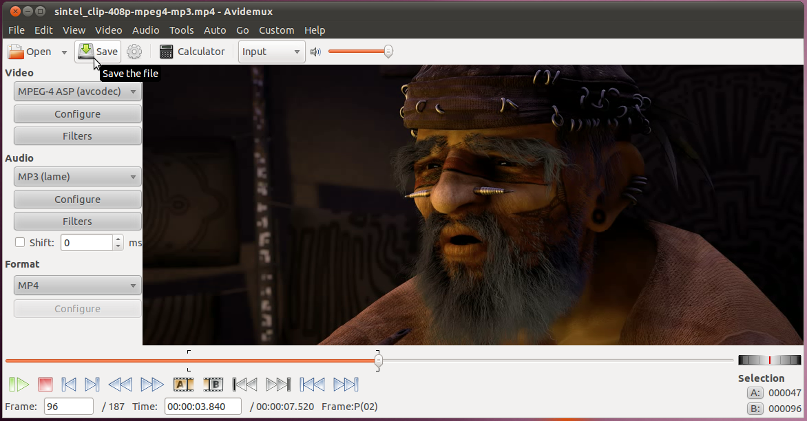